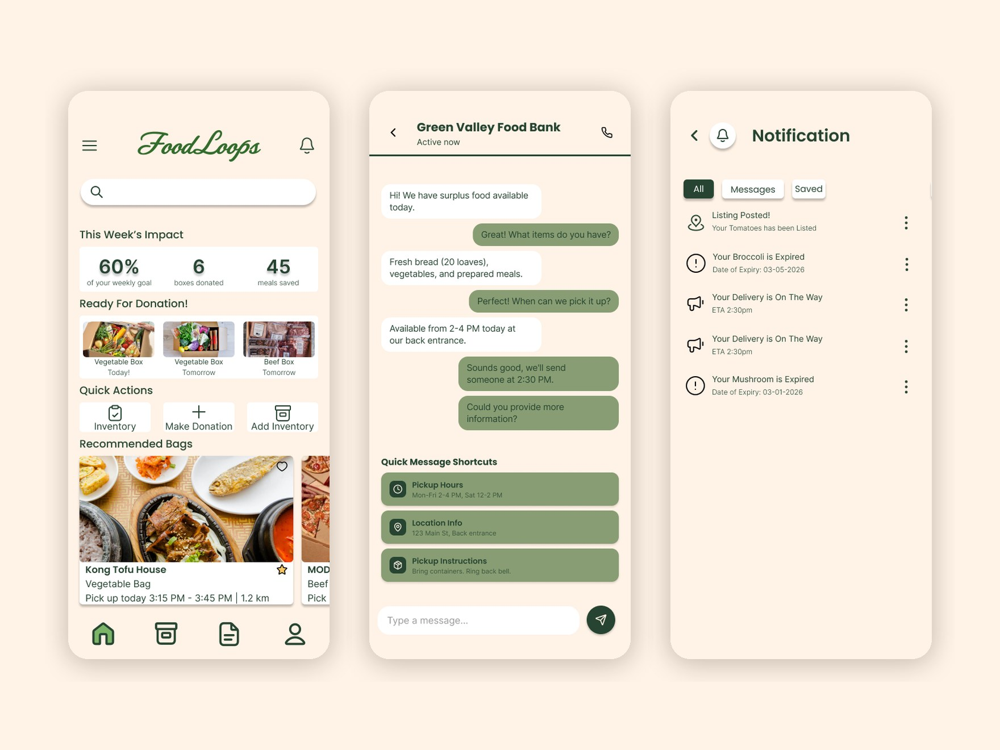
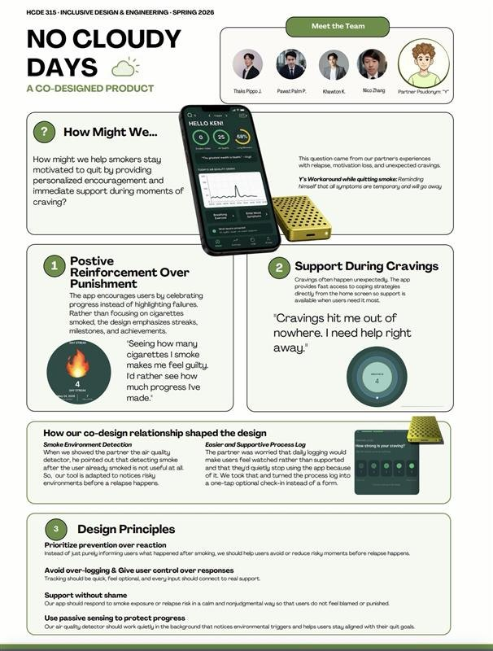

Hi, I'm Pippo. I'm a product designer and UX researcher studying Human Centered Design & Engineering at the University of Washington, graduating June 2027.
Most of my projects start by finding out we were solving the wrong problem.
-
Food Loops
a donation problemturned out to be a workflow problem -
No Cloudy Days
catching you smokingbecame protecting your progress
Looking for full-time product design, UX research and product roles from summer 2027.
Get in touchSelected work
Two case studies from UW HCDE, 2026

Food Loops
An inventory and surplus app for restaurants. Interviews showed staff had no time to list leftover food, so we moved the product to the moment deliveries arrive.
- My part
- Research synthesis, concepts, interaction and visual design, usability testing
- Team
- Four designers
- Output
- Tested Figma prototype

No Cloudy Days
A quit-smoking app and wrist sensor, co-designed with one person who was quitting. His feedback turned a tracker into a tool that protects progress instead of policing it.
- My part
- Wearable design, V1 documentation, partner testing, design principles
- Team
- Four designers, HCDE 315
- Output
- App and sensor, two prototype rounds
Experience
Four summers inside large companies in Bangkok
-
Jun–Aug 2026
Accenture
Management Consulting Intern
Mapped customer journeys across banking, wealth and lending, and researched customers, competitors and AI-driven development. Turned the findings into frameworks, process flows and recommendations for client leadership.
-
Jun–Aug 2025
Accenture
Project Manager Intern
Coordinated two workstreams for Thailand's first fully virtual bank. Resolved 6–10 issues and 2–5 change requests a week, and built a tracker that cut reporting from 2–3 days to same-day.
-
Jun–Aug 2023
Ascend Group
Operations Intern
Designed wireframes for a next-generation e-commerce platform and ran regional market and competitor research to inform its direction.
-
Jun–Aug 2022
Lotus's
Format & Operational Development Intern
Analyzed data for a $100M cost-saving initiative and investigated store bottlenecks on site, then presented recommendations to senior leadership.
President, UW Thai Student Association, 2023–2024
Dining Student Assistant, UW Housing & Food Services, 2025–2026
How I work
I study design at UW and spend my summers in business. At a retailer, an e-commerce group and twice at Accenture, I kept seeing that most product problems are also operations problems: someone has to do the extra step, and usually they don't have time.
So I start with the people who will have to live with a product, and I let them change my mind.
-
Let the person redirect me
Our research partner in No Cloudy Days rejected the breathing exercise we were proud of. We moved it instead of defending it.
-
Build on what people already do
Food Loops works because scanning happens while a delivery is already being handled, not as a new task at closing time.
-
Say what I can't claim
Each case study ends with its limits: one participant, and no test during a real dinner service.
- Studying
- BS, Human Centered Design & Engineering
University of Washington, June 2027 - Design and research
- Figma, wireframing, prototyping, interviews, usability testing, journey mapping, synthesis
- Product and business
- Product strategy, market and competitor research, process mapping, executive presentations, issue and change management
- Technical
- HTML/CSS, JavaScript, Python, SQL, R, Excel, Power BI
- Languages
- English, Thai
Get in touch
I'm looking for full-time roles in product design, UX research or product management, starting summer 2027 in the Seattle area.
Seattle Bangkok